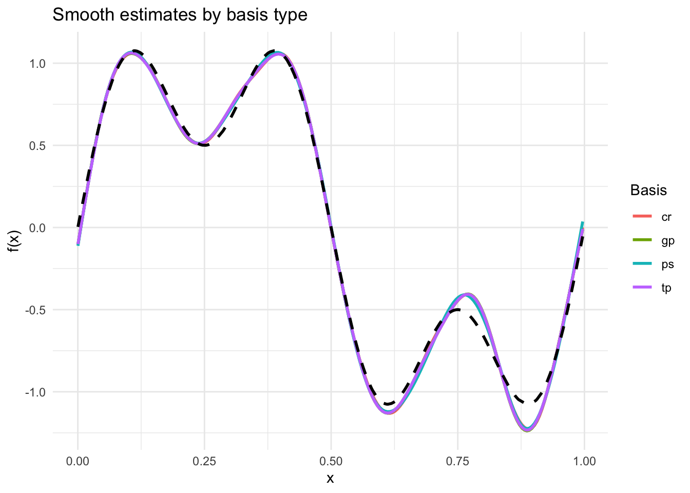
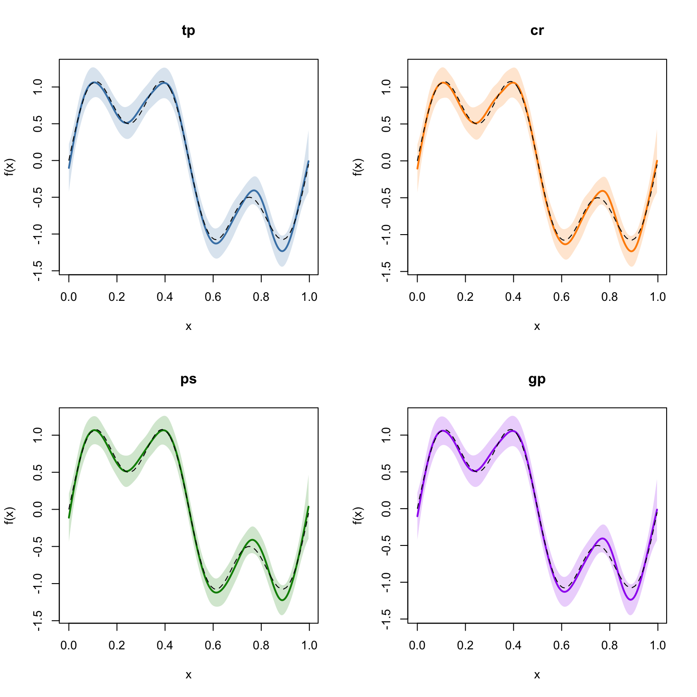
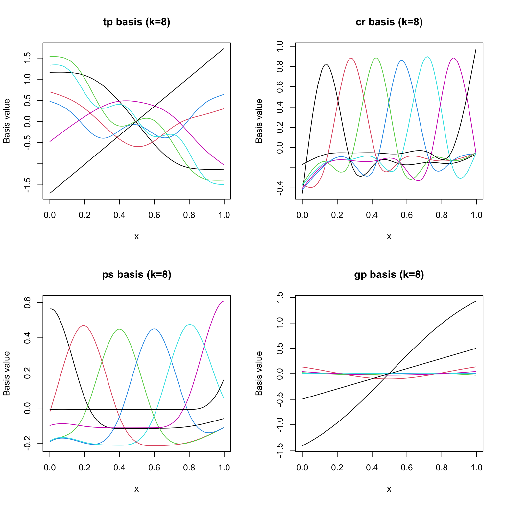

library(mgcv)Loading required package: nlmeThis is mgcv 1.9-3. For overview type 'help("mgcv-package")'.library(gratia)
library(ggplot2)GAMs represent smooth functions as linear combinations of basis functions. The choice of basis affects the shape of the fitted smooth, computational cost, and numerical properties. mgcv supports several basis types:
| Code | Basis | Description |
|---|---|---|
"tp" |
Thin plate regression spline | Default. Optimal in a certain sense; no knot placement needed |
"cr" |
Cubic regression spline | Cubic spline with knots at data quantiles; efficient for 1D |
"ps" |
P-spline | B-spline basis with difference penalty |
"gp" |
Gaussian process | Squared-exponential covariance as a basis |
This vignette fits the same data with each basis and compares the results.
library(mgcv)Loading required package: nlmeThis is mgcv 1.9-3. For overview type 'help("mgcv-package")'.library(gratia)
library(ggplot2)We load \(n = 300\) observations generated from a function with both broad and fine-scale structure:
\[ y_i = \sin(2\pi x_i) + 0.5\sin(6\pi x_i) + \varepsilon_i, \quad \varepsilon_i \sim \mathcal{N}(0, 0.5^2) \]
dat <- read.csv("../data.csv")
x <- dat$x
y <- dat$y
n <- nrow(dat)
f_true <- sin(2 * pi * x) + 0.5 * sin(6 * pi * x)
df <- data.frame(x = x, y = y)We fit the same formula with each basis type, using k = 20 basis functions:
bases <- c("tp", "cr", "ps", "gp")
models <- list()
for (bs in bases) {
models[[bs]] <- gam(y ~ s(x, k = 20, bs = bs), data = df, method = "REML")
}results <- data.frame(
Basis = bases,
EDF = sapply(models, function(m) round(sum(pen.edf(m)), 2)),
Deviance = sapply(models, function(m) round(deviance(m), 2)),
Dev_Explained = sapply(models, function(m) round(summary(m)$dev.expl * 100, 1))
)
print(results) Basis EDF Deviance Dev_Explained
tp tp 12.92 64.44 75.1
cr cr 12.78 64.49 75.1
ps ps 11.66 64.63 75.1
gp gp 12.62 64.42 75.2We evaluate each smooth on the same grid and compare:
se_list <- lapply(bases, function(bs) {
se <- smooth_estimates(models[[bs]], n = 200)
se$basis <- bs
se
})
se_all <- do.call(rbind, se_list)
ggplot(se_all, aes(x = x, y = .estimate, colour = basis)) +
geom_line(linewidth = 1) +
geom_line(data = data.frame(x = x, y = f_true),
aes(x = x, y = y), inherit.aes = FALSE,
linetype = "dashed", linewidth = 1) +
labs(x = "x", y = "f(x)", title = "Smooth estimates by basis type",
colour = "Basis") +
theme_minimal()
Each basis with its confidence band:
par(mfrow = c(2, 2))
colors <- c("steelblue", "darkorange", "green4", "purple")
for (i in seq_along(bases)) {
bs <- bases[i]
se <- smooth_estimates(models[[bs]], n = 200)
plot(se$x, se[[".estimate"]], type = "l", lwd = 2, col = colors[i],
ylim = range(c(se[[".estimate"]] - 2 * se[[".se"]], se[[".estimate"]] + 2 * se[[".se"]])),
xlab = "x", ylab = "f(x)", main = bs)
polygon(c(se$x, rev(se$x)),
c(se[[".estimate"]] - 2 * se[[".se"]], rev(se[[".estimate"]] + 2 * se[[".se"]])),
col = adjustcolor(colors[i], alpha.f = 0.2), border = NA)
lines(x, f_true, lty = 2, lwd = 1)
}
par(mfrow = c(1, 1))To understand how each basis works, we can examine the model matrix columns for a small number of basis functions (k = 8):
par(mfrow = c(2, 2))
for (i in seq_along(bases)) {
bs <- bases[i]
m_small <- gam(y ~ s(x, k = 8, bs = bs), data = df, method = "REML")
X <- model.matrix(m_small)
# Remove intercept column
X_smooth <- predict(m_small, type = "lpmatrix")[, -1]
k_cols <- ncol(X_smooth)
ord <- order(df$x)
matplot(df$x[ord], X_smooth[ord, ], type = "l", lty = 1,
xlab = "x", ylab = "Basis value",
main = paste0(bs, " basis (k=8)"))
}
par(mfrow = c(1, 1))Thin plate ("tp"): The default choice. Works well in any dimension. Optimal smoothness in a certain mathematical sense. Slightly more expensive than knot-based alternatives for large datasets.
Cubic regression spline ("cr"): Efficient for 1D smoothing with knots at data quantiles. Produces smooth curves that are natural cubic splines. Good default for univariate smooths.
P-spline ("ps"): B-spline basis with a difference penalty on adjacent coefficients. Evenly spaced knots. Computationally efficient and well-behaved, especially for evenly sampled data.
Gaussian process ("gp"): Uses a squared-exponential covariance kernel. Produces very smooth curves. Useful when the underlying function is believed to be infinitely differentiable.
In this vignette we:
The next vignette demonstrates models with multiple smooth terms.